| 상품 | 군마트 | 쿠팡 | 차이 | |
|---|---|---|---|---|
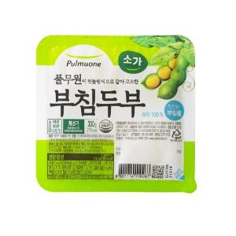 | 풀무원식품 소부침두부 300g | 1,130원 | 1,917원 | -41% |
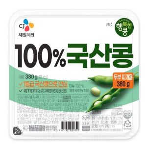 | 씨제이제일제당 국산콩 두부 찌개용 380g | 1,850원 | 2,560원 | -28% |
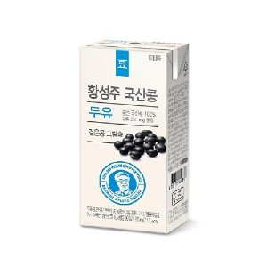 | 이롬황성주국산콩두유검은콩고칼슘 190ml | 550원 | 748원 | -26% |
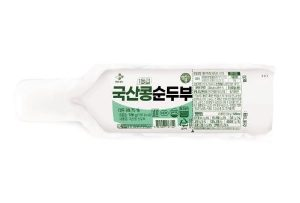 | 씨제이제일제당 국산콩 순두부 330g | 1,400원 | 1,800원 | -22% |
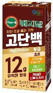 | 정식품 베지밀 고단백 두유 초코 190ml | 530원 | 651원 | -19% |
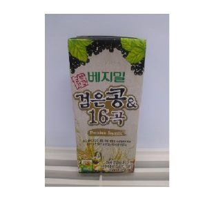 | 정식품 베지밀검은콩과16곡팩 190ml | 510원 | 623원 | -18% |
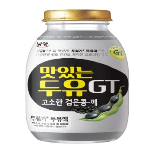 | 남양유업 맛있는 두유 GT 고소한 검은콩깨 200ml | 750원 | 909원 | -18% |
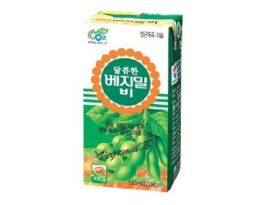 | 정식품 베지밀팩 190ml | 580원 | 653원 | -11% |
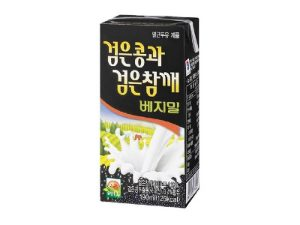 | 정식품 검은콩과검은참깨베지밀 190ml | 620원 | 681원 | -9% |
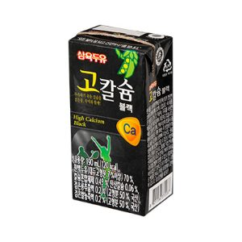 | 삼육두유 고칼슘블랙 190ml | 690원 | 685원 | +1% |
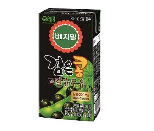 | 정식품 베지밀검은콩고칼슘두유 190ml | 740원 | 725원 | +2% |
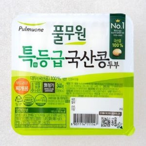 | 풀무원식품 풀무원국산콩두부부드러운찌개용 340g | 2,760원 | 2,495원 | +11% |
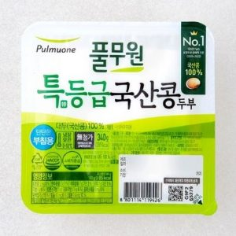 | 풀무원식품 풀무원국산콩두부단단한부침용 340g | 2,800원 | 2,495원 | +12% |
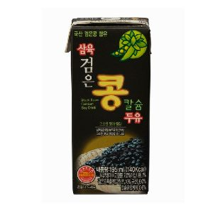 | 삼육식품 삼육검은콩칼슘두유 190ml | 610원 | 540원 | +13% |
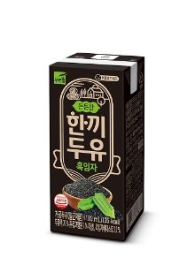 | 푸르밀 한끼두유 흑임자 190ml | 620원 | 548원 | +13% |
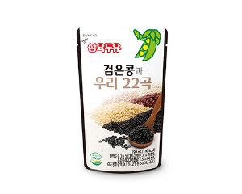 | 삼육두유 검은콩과 우리22곡 190ml | 810원 | 662원 | +22% |
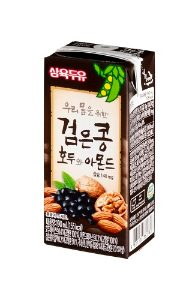 | 삼육두유 검은콩호두와아몬드 190ml | 770원 | 549원 | +40% |
두유·두부 말고 다른 것도
더 이상 직접 비교하지 마세요.
군마트 상품을 한곳에 모아 PX 가격과 온라인 가격을 쉽게 비교할 수 있습니다.
이게 실제 화면이에요. 상품을 누르면 바로 열립니다.
국방가족 분들이 조금이라도 편하게 군마트를 이용하셨으면 하는 마음으로 만들었습니다.
국방가족을 위한 작은 재능기부입니다.